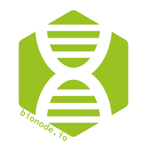

class: center, middle # Lab meeting 18/09/2017 ## Bionode-watermill - A (Not Yet Streaming) Workflow Engine #### Tiago Jesus  <img style="width: 20%;" src="images/vertical_GSoC_logo.jpg"/> --- # Google summer of code <div style="text-align: center;"> <img src="images/vertical_GSoC_logo.jpg" style="width: 10%; height: auto; position: fixed; right: 5%; "/> </div> * #### What is it? * Program to enroll students with coding organizations, _financed by Google_. <div style="text-align: center;"> </div> * #### Organization * Open Bioinformatics Foundation <div style="text-align: center;"> </div> * #### Community * Bionode <div style="text-align: center;"> </div> * #### Project name * Bionode-watermill --- # Google summer of code * ### Mentors <div> <b>Julian Mazzitelli</b> - <a href="https://twitter.com/thejmazz"> </a> <a href="https://github.com/thejmazz"> <img height="20" width=auto title="github" alt="github logo" src="images/github.svg"/> </a> </div> * bioinformatics at UofT, @bionode, @biorender, @rareconnect, research student at CCM SickKids. graphics junkie. <div style="text-align: right;"> </div> <div> <b>Bruno Vieira</b> - <a href="https://twitter.com/bmpvieira"> </a> <a href="https://github.com/bmpvieira"> <img height="20" width=auto title="github" alt="github logo" src="images/github.svg"/> </a> </div> * PhD Student at @wurmlab; @mozillascience Fellow; Founder of @bionode <div style="text-align: right;"> </div> --- # Bionode-watermill * Is a workflow engine to manage complex and dynamic pipelines ## Wait what? What's a workflow? * A workflow is the processing of tasks that comprise a work process <div style="text-align: center;"> </div> --- ## Then... what's a workflow manager? * Is a **software** developed for setting-up, perform and monitor a defined sequence of tasks ## And... what is a pipeline? * Series of transformations applied with **tools** to a **source** to produce a **destination**. _Simplest Example:_ <div style="text-align: center;"> </div> --- # Who is bionode-watermill for? ### Biologists * Who understand the importance of **replication**. <div style="text-align: center;"> </div> ### Programmers * Who desire an efficient and easy-to-write methodology for developing **complex** and **dynamic** pipelines <div style="text-align: center;"> </div> --- # KISS example ### Create a file and write something to it <div style="text-align: left;"> <img src="images/arrow_right.png" style="width: 10%; height: auto; position: relative; left: 35%;"/> <img src="images/written_file.png" style="width: 15%; height: auto; position: relative; left: 50%;"/> </div> #### Using shell script ```bash touch "test.txt" | echo "some test string" > test.txt ``` ##### Execution ```bash sh pipeline.sh ``` --- # KISS example #### Using shell script ```bash touch "test.txt" | echo "some test string" > test.txt ``` #### Using bionode-watermill ```js const {task} = require('bionode-watermill') const exampleTask = task({ output: '*.txt' }, () => `touch "test.txt" | echo "some test string" > test.txt` ) // execute the task exampleTask() ``` ##### Execution ```js node pipeline.js ``` --- # KISS example ### Right... but that is even more complicated! Why bother? * More complexity... <div style="text-align: left;"> <img src="images/arrow_right.png" style="width: 10%; height: auto; position: relative; left: 15%;"/> <img src="images/written_file.png" style="width: 15%; height: auto; position: relative; left: 25%;"/> </div> <div style="text-align: left;"> <img src="images/arrow_right.png" style="width: 10%; height: auto; position: relative; left: 15%;"/> <img src="images/written_file.png" style="width: 15%; height: auto; position: relative; left: 25%;"/> <img src="images/arrow_right.png" style="width: 10%; height: auto; position: absolute; left: 65%; top:50%"/> <img src="images/written_file.png" style="width: 20%; height: auto; position: absolute; left: 75%; top:43%"/> </div> --- # KISS example ### Shell script ```bash # create the two files and write to them touch "test.txt" | echo "some test string" > test.txt touch "test2.txt" | echo "some test string2" > test2.txt # However that test.txt and test2.txt are generated from different # programs and that they store files in different folders PATH_TO_FILE1 = /some/hardcoded/folder PATH_TO_FILE2 = /another/hardcoded/folder # now merge the two files cat ${PATH_TO_FILE1}/test.txt ${PATH_TO_FILE2}/test2.txt > merged.txt # Notice how merged.txt is saved in current working directory ``` _Result_ ```bash # Resulting file some test string some test string2 merged.txt (END) ``` --- # KISS example ### bionode-watermill ```js const {task} = require('bionode-watermill') const exampleTask = task({ output: '*.txt' }, () => `touch "test.txt" | echo "some test string" > test.txt` ) const exampleTask2 = task({ output: '*.txt' }, () => `touch "test2.txt" | echo "some test string2" > test2.txt` ) const mergeFiles = task({ input: { firstFile: '*t.txt', secondFile: '*2.txt' } output: '*.txt }, ({input}) => `cat ${input.firstFile} ${input.secondFile} > merged.txt` ) ``` --- # KISS example ### bionode-watermill * There are several ways to define inputs (for multiple inputs), this is just the clearer case for demonstration. * Pipeline can also be executed in different fashions * _sequentially:_ ```js join(exampleTask, exampleTask2, mergeFiles) ``` * _simultaneously:_ ```js // join is still required in order for mergeFile to be ran after // obtaining both files join(junction(exampleTask, exampleTasks2), mergeFiles) ``` --- # Bionode-watermill ### Tasks Task is basically a process that executes something (a program, a function, a promise or even a stream) and may have an input and/or output. ### Orchestrators An orchestrator organizes how tasks will be executed, transforming pipelines from linear pieces of code into something more complex. <div style="text-align: center;"> </div> --- # Bionode-watermill ### Orchestrators #### join `join` runs a sequence of tasks sequentially. _Example_: <div style="text-align: left;"> </div> --- # Bionode-watermill ### Orchestrators #### join `join` runs a sequence of tasks sequentially. _Example_: <div style="text-align: center;"> </div> <div style="text-align: left;"> </div> --- # Bionode-watermill ### Orchestrators #### junction `junction` splits the pipeline into two or more branches and waits for the results of all branches to continue the pipeline. _Example_: <div style="text-align: left;"> </div> --- # Bionode-watermill ### Orchestrators #### junction `junction` splits the pipeline into two or more branches and waits for the results of all branches to continue the pipeline. _Example_: <div style="text-align: left;"> </div> --- # Bionode-watermill ### Orchestrators #### fork `fork` splits the pipeline into two or more branches and **does not wait** for the results off all branches to continue the pipeline. _Example_: <div style="text-align: left;"> </div> --- # Bionode-watermill ### Orchestrators #### fork `fork` splits the pipeline into two or more branches and **does not wait** for the results off all branches to continue the pipeline. _Example_: <div style="text-align: left;"> </div> --- # Bionode-watermill ### Pratical example? * #### INNUca.py pipeline! <div style="text-align: center;"> </div> --- # Bionode-watermill ### "Watermilled" INNUca pipeline **Disclaimer**: any similarity with reality is pure coincidence ¯\\\_(ツ)_/¯ ```js const innuncaDefaultMode = join( unZip, // 1 expectedCoverageCalculation, // 2 // trueCoverageDetermination in bionode-watermill can be decomposed // in two or more tasks, at least one for bowtie2 and another one for // samtools trueCoverageDetermination, // 3 fastQC, // 4 trimmomatic, // 5 spades, // 6 assemblyCoverageFiltering, // 7 pilon, // 8 MLST2 // 9 ) // execute pipeline innuncaDefaultMode() ``` --- # Bionode-watermill ### "Watermilled" INNUca pipeline - alternative mode ```js const innuncaAlternativeMode = join( unZip, // 1 expectedCoverageCalculation, // 2 // trueCoverageDetermination in bionode-watermill can be decomposed // in two or more tasks, at least one for bowtie2 and another one for // samtools trueCoverageDetermination, // 3 fastQC, // 4 trimmomatic, // 5 //****************** notice the re-usage of tasks ******************// expectedCoverageCalculation, // 2 trueCoverageDetermination, // 3 fastQC, // 4 trimmomatic, // 5 //*************************** now continue *************************// spades, // 6 assemblyCoverageFiltering, // 7 pilon, // 8 MLST2 // 9 ) ``` --- # Bionode-watermill ### "Watermilled" INNUca pipeline - alternative mode ```js // execute pipeline innuncaAlternativeMode() ``` Details on how to execute optional tasks are provided [here](https://github.com/bionode/GSoC17/blob/5c1e1da0b54f0c0859d06b8f28f4384d7c9937c0/Journal/Week_7.md#optional-tasks). In this case re-usage of tasks is fine because bionode-watermill will match the input/output glob patterns that are the **last stored match** for a given run of the script being executed. <div style="text-align: center;"> </div> --- # Bionode-watermill ### I/O * bionode-watermill will match the input/output glob patterns that are the **last stored match** for a given run of the script being executed (i.e, it will crawl the directory of files to find the first matching file or glob pattern). * With other tools, control of input and output can be **very painful** and results will be **harder to reproduce** in different machines and environments. <div style="text-align: center;"> </div> --- # Bionode-watermill ### But let's go wilder! * Download reference genome * Download from NCBI using ftp * Download samples * Download sample from SRA * Uncompress SRA * Map with two different mappers (`bowtie2` and `bwa`) * Create index for reference genome * Map reads against reference genome * Get coverage results for each mapping approach individually * "Bunch" of `samtools` commands that retrieve coverage in the end --- # Bionode-watermill ```js const pipeline = join( // Simultaneously download reference and samples junction( getReference, join(getSamples,fastqDump) ), // prepares inputs for mappers (uncompressing reference) and index for // samtools samtoolsFaidx, gunzipIt, // runs in parallel both mappers fork( join(indexReferenceBwa, bwaMapper), join(indexReferenceBowtie2, bowtieMapper) ), // here the pipeline will continue splited into two distinct branches, // one for each mapper. samtoolsView, samtoolsSort, samtoolsIndex, samtoolsDepth ) ``` --- # Bionode-watermill ### What does this pipeline look like? <div style="text-align: center;"> </div> --- # Bionode-watermill ### Main features * Modularity - Recycling tasks <div style="text-align: right;"> </div> * Reusability * Automated input/output handling * Ability to run programs using Unix shell * Node.js integration * [Streamable Tasks](https://github.com/bionode/bionode-watermill/blob/master/docs/Task.md#streamable-tasks-potential) --- # Bionode-watermill ### Main features * Modularity - Recycling tasks <div style="text-align: right;"> </div> * Reusability * Automated input/output handling * Ability to run programs using Unix shell * Node.js integration * [Streamable Tasks](https://github.com/bionode/bionode-watermill/blob/master/docs/Task.md#streamable-tasks-potential) ### Wait! Streams? * Streams are collections of data (similar to arrays or strings), but they might not be available all at once. Also, they don't fit in memory. Check [this video](https://youtu.be/p0v_uls8h-0?t=459) if you want to know more on the subject. --- # Bionode-watermill + GSoC2017 ### Main accomplishments * Tutorial. * New example pipeline (two-mappers). * Logger for redux (for debugging purposes). * Graphson-like log file. * Directed acyclic graph visualization tool (using d3.js force-directed graph). * _Orchestratorception_ - Fixed behavior of nested orchestrators. * Tested and documented concurrency, optional tasks and multiple inputs to tasks and pipelines. * Updated documentation. --- # Acknowledgements * Google summer of code * Open bioinformatics foundation * My mentors: Bruno Vieira and Julian Mazzitelli <div style="text-align: center;"> <img src="images/vertical_GSoC_logo.jpg" style="width: 20%; height: auto; position: absolute; top: 60%; left: 5%; "/> </div> <div style="text-align: center;"> <img src="images/logo_imm.png" style="width: 15%; height: auto; position: absolute; top: 5%; right: 10%; "/> <img src="images/ummi1.png" style="width: 10%; height: auto; position: absolute; top: 5%; right: 25%; "/> </div>